Comprehension passage - the questions below it refer to this
Based on the above data, answer the given subquestions.
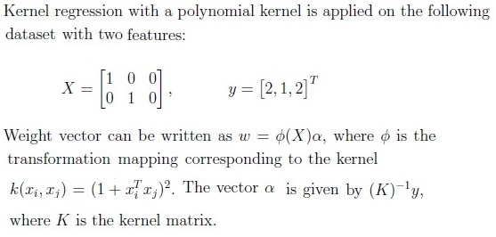
Q1MCQ3 marks
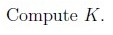
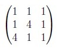
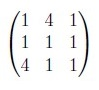
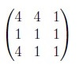
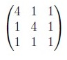
Q2SA4 marks
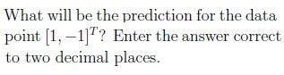
Comprehension passage - the questions below it refer to this
Based on the above data, answer the given subquestions.
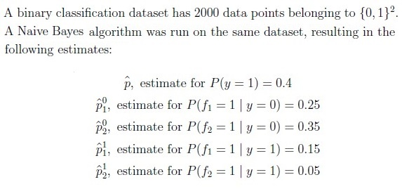
Q3SA4 marks
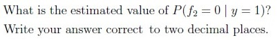
Q4SA3 marks
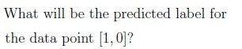
Q5SA4 marks
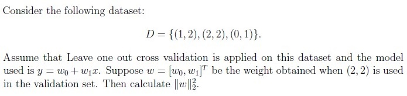
Q6SA4 marks
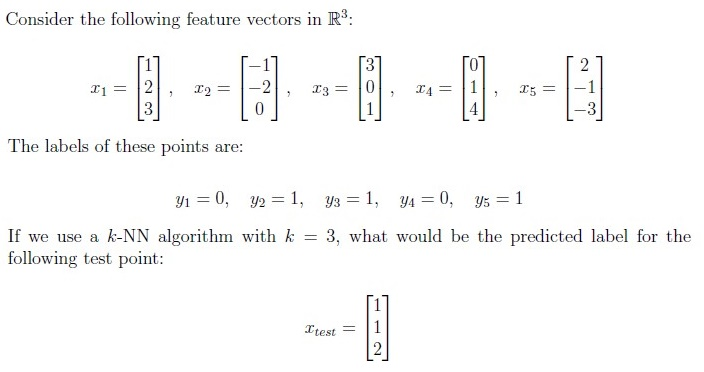
Q7SA4 marks
Suppose you want to use a Naive Bayes classifier to predict whether a student will pass or fail an exam based on two features: the number of hours they studied and whether they attended review sessions. Assume that the features are conditionally independent given the exam outcome and that the variances of the study hours distributions are equal for both pass and fail categories.
How many parameters are required to classify a new student using this Naive Bayes classifier?
Q8MSQ4 marksselect all that apply
Select all true statements.
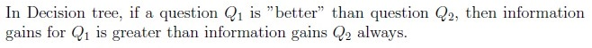
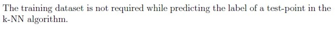
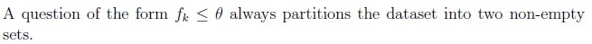
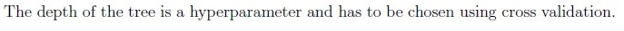
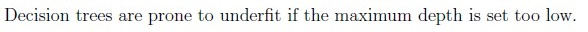
Comprehension passage - the questions below it refer to this
Consider a binary classification problem with a training dataset of 100 points, evenly distributed between two classes (50 points in each class). You decide to train a k-NN algorithm with k = 3. Each point is considered its own neighbor during classification.
Based on the above data, answer the given subquestions.
Q9SA3 marks
What is the minimum number of misclassifications that can occur in the training dataset when using this k-NN algorithm?
Q10MCQ2 marks
Assuming there are outliers, the decision boundary becomes smoother with decreasing value of k
in a k-NN algorithm.
TRUE
FALSE
Comprehension passage - the questions below it refer to this
Based on the above data, answer the given subquestions.
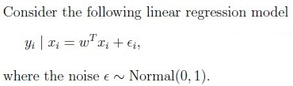
Q11MCQ2 marks
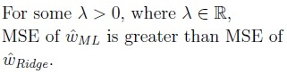
TRUE
FALSE
Q12MCQ4 marks
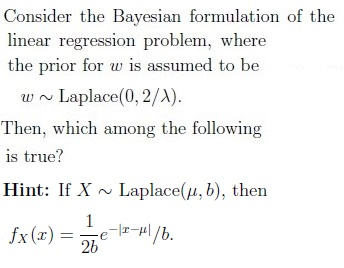
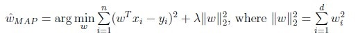
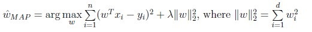
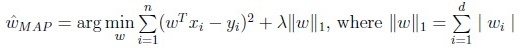
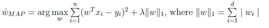
Comprehension passage - the questions below it refer to this
Consider a binary classification problem in which a decision tree is classifying data points into two classes, A and B. In a particular node of the tree, 60% of the data points belong to class A, while the remaining 40% belong to class B.
Based on the above data, answer the given subquestions.
Q13MCQ2 marks
Do you have enough information to find the entropy of this node?
Yes
No
Q14SA4 marks
If the answer to the previous question is ”Yes,” calculate the entropy of this node to three decimal places. If the answer to the previous question is ”No,” enter -1 as your answer.